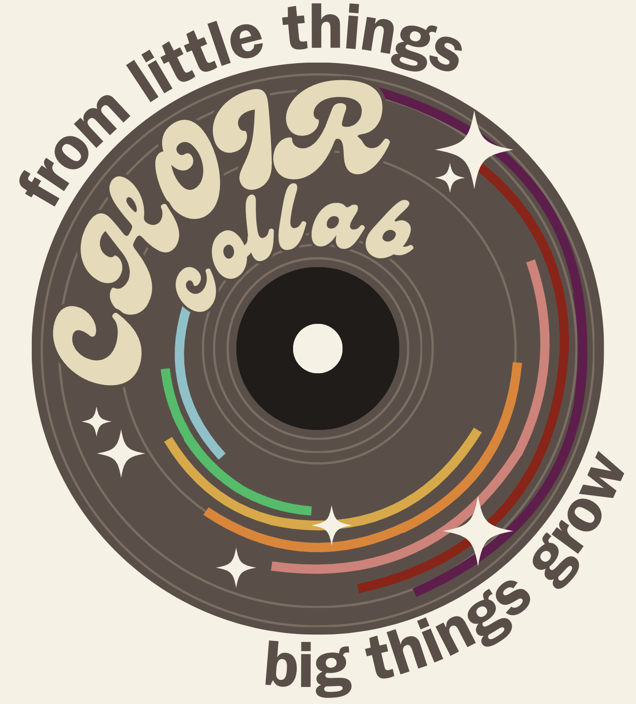
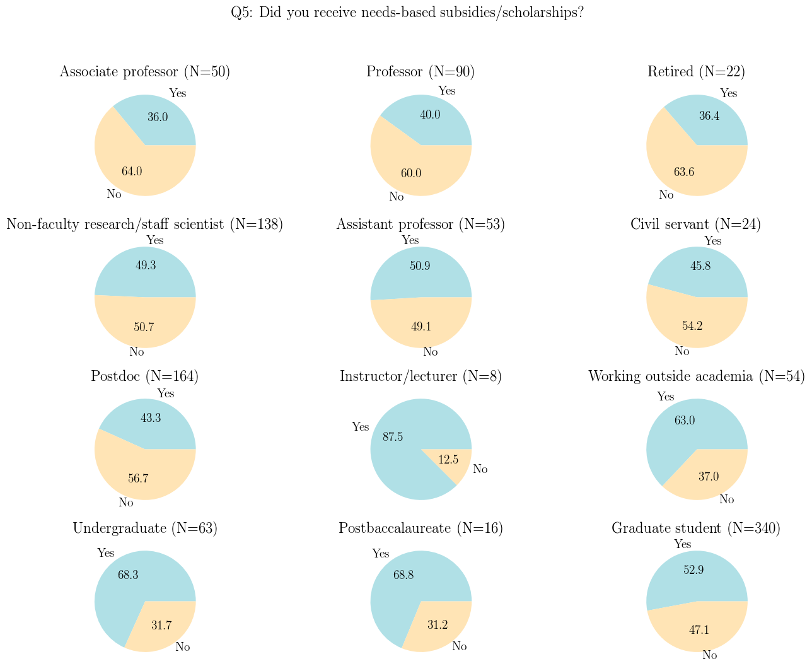
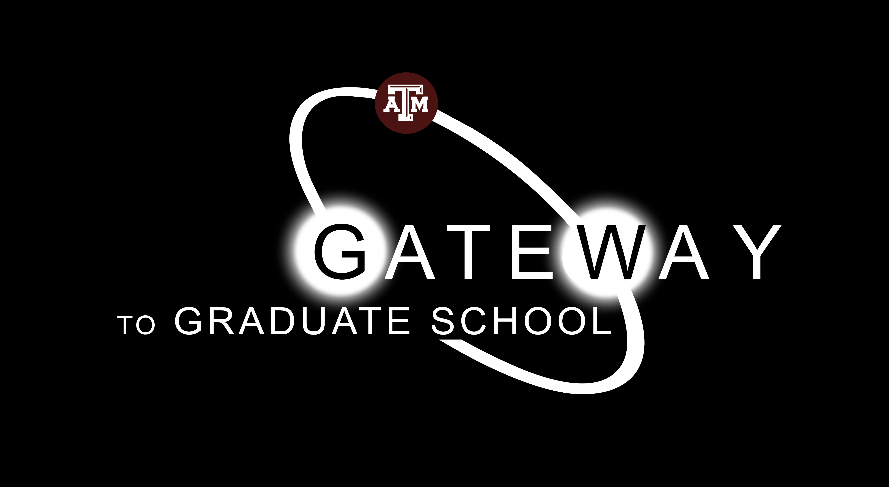

Equity
Academia and our society at large uphold systems of oppression, including and especially white supremacy and patriarchy, that we must actively work to tear down.
I am passionate about transforming academia—and society—into a more equitable place. Throughout my time as a graduate student and postdoc, I have worked toward diversity, equity, and inclusivity (DEI) in both my local and academic communities. This is central to my identity as a scientist, and I am determined to continue this work moving forward in my career.
choirchoir collaboration logo
choir is an ensemble of astronomers who place equal emphasis on understanding the evolution of galaxies across multiple scales, and bettering systems of doing science. We center intersectionality and value interdisciplinarity through tangible support and initiatives led by our collective of scientists. We are humans first, and astronomers second; in both of these roles, we serve as stewards of education, justice, and the co-creation of knowledge and community.
We are currently organizing the choir conference to be held in Summer 2025. We are also working on forms of mutual aid to support people in physics, astronomy, and earth sciences who have been impacted by recent bigoted and anti-science policy changes.
AAS Survey on Poverty in AstronomyThe majority of respondents working outside academia received needs-based aid, while the majority of tenure-track faculty never received needs-based aid.
I am leading the analysis of the American Astronomical Society (AAS) Committee on the Status of Minorities in Astronomy (CSMA) survey on poverty in astronomy. In this position, I organize meetings, work on survey results and analysis, and coordinate survey analysis tasks. I am co-authoring white paper(s) on survey results and I presented results at a Special Session in AAS 245.
Prior to the survey publication, I served as a member of the survey design working group, helping to brainstorm, write, and edit the survey questions. The results of this survey will illustrate the myriad obstacles to careers in astronomy and academia that people from backgrounds of financial scarcity and poverty face.
Department Leadership and Mentoring
In 2019, I co-founded MAGIC, a peer mentoring program at Texas A&M with the goal of building community and demystifying graduate school for all incoming astronomy graduate students, in particular providing a support system for students from historically-excluded backgrounds. After I became a postdoc in 2022, I took leadership of the Texas A&M astronomy postdoc-graduate student mentoring program. In Fall 2022, I completed the Intent to Impact mentoring course offerred by Movement Consulting, which helps academics learn to become better mentors for students with marginalized identities. You can read more about MAGIC, the postdoc-graduate student mentoring program, and my experience in the transformative Intent to Impact course here!
In 2020 and 2021, I co-led DEI seminars for the Texas A&M Astronomy group. In these seminars, I analyzed the shortcomings of our department and the astronomy group in particular, and discussed specific steps we could take to improve our environment and combat systemic barriers for students of marginalized identities.
From 2020-2022, I led a group of graduate students who met regularly with a faculty member in the Texas A&M Department of Physics & Astronomy, with the goal of improving the department for people of marginalized identities. In Fall 2020, our group convinced the Department to remove the Physics GRE from graduate application requirements. With this group, I also developed Gateway to Graduate School.
In Fall 2023, I joined the Physics & Astronomy Diversity & Equity Committee at Dartmouth College. At Dartmouth, I have served as an organizer for GEMS, a gender equality group and counterspace for people of minoritized genders in the Physics & Astronomy Department at Dartmouth. In 2024, I co-founded the Graduate Academia Survival Program (GASP), a peer-mentoring program pairing incoming graduate students with graduate and postdoc mentors.
Gateway to Graduate School
I co-founded Gateway to Graduate School, a free 1-day program to educate undergraduate students about what graduate school is like, how to get into graduate school, and share resources and information about being in an Astronomy or Physics Ph.D. program at Texas A&M University.
The program is specifically designed for Freshmen and Sophomore students in Texas from backgrounds that academics in physics and astronomy have historically excluded. Meals and hotel rooms are provided to attendees, and funds for travel are also provided. All sessions will also be livestreamed via Zoom so as to make the program more accessible.
I was PI of two successful funding proposals—one from the Department of Physics & Astronomy, and one from the College of Science—which together were awarded $3800 for the inaugural program in 2022. I designed and coordinated the inaugural program alongside Addy Evans, Lauren Aldoroty, Silvana Delgado, Emily Harris, Thomas Onyango, and Prof. Louis Strigari.
Astronomy Graduate Student Representative
From 2021-2022, I served as the Astronomy Graduate Student Representative at Texas A&M. In this position, I represented the interests and concerns of astronomy graduate students at monthly faculty meetings. I also served as a resource for graduate students to reach out to when encountering problems and conflicts within the departments.
Additionally, I served as the head writer for the Texas A&M University Astronomy Graduate Student Handbook, providing a centralized resource detailing departmental policies, expectations, and tips for success. I also served as the head writer of the Texas A&M Astronomy Graduate Student Website, an informative resource about our astronomy program for prospective and incoming graduate students, to help demystify graduate school and the application process.